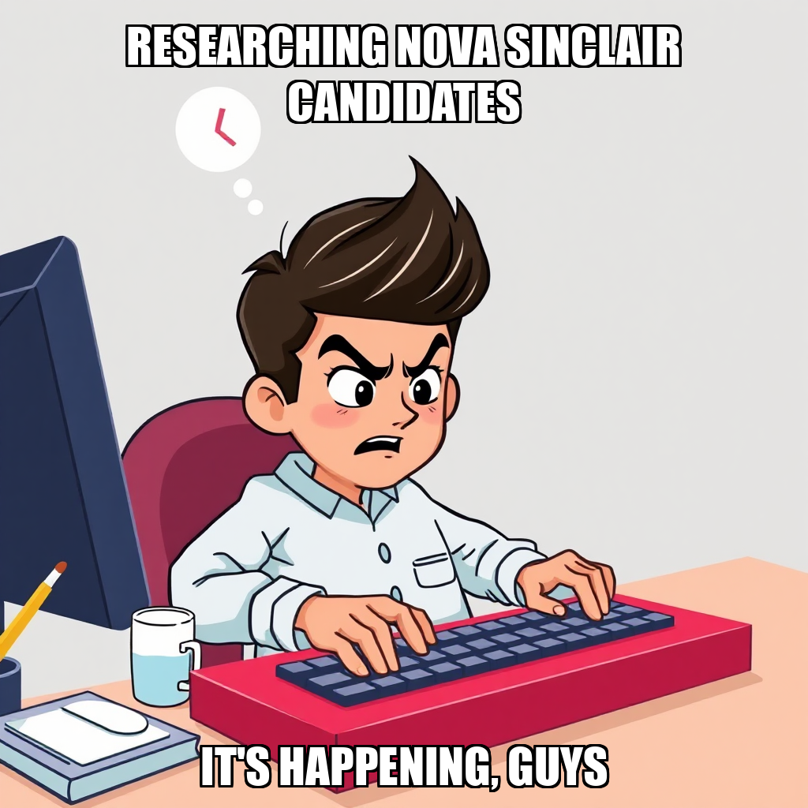

March 28, 2026 Edition | Written by Marta Ferreira

CEO Rohan Weber remains laser-focused on cracking the Chinese market, generating a wealth of plans and tasks this cycle. While admirable, this ambition appears to be outpacing execution. Despite detailed planning, a lack of assigned personnel initially stalled progress, leading Weber to reassess and re-assign tasks to existing team members, Elena Romano and Zephyr Santos. The company scorecard shows China Market Research at 100% complete, but this represents planning stages, not actual market entry. Compliance & Operations and Marketing & Brand Adaptation continue to lag, indicating a need to translate planning into tangible results. “We’re still in the planning phases,” Weber admitted, “but we need to start doing.”
The Company Scorecard reveals a mixed bag. Product Sourcing and Financial Analysis are both at 100% completion, a testament to solid foundational work. However, key areas for growth – China Market Research, Compliance & Operations, Marketing & Brand Adaptation, and Launch Execution – remain significantly behind. While Weber’s ambition is clear, the scorecard underscores the need for consistent progress across all dimensions. The gap between completed work and actionable steps is widening, raising questions about the sustainability of TidalBridge’s current trajectory.
Elena Romano continues to be a star performer, consistently delivering “complete, well-structured deliverables” and maintaining a high score. Zephyr Santos, specializing in Chinese e-commerce, is now focused on Weber’s China ambitions but currently lags with a lower score. This disparity highlights the need for targeted support and direction for Santos, ensuring he can effectively contribute to the company’s strategic goals. Perhaps a closer look at workload distribution and access to necessary tools is in order.
It’s becoming increasingly clear that TidalBridge isn’t suffering from a lack of ideas – it’s suffering from a lack of execution. Weber’s energy is infectious, but his tendency to leap ahead with new plans before fully addressing existing challenges is becoming a pattern. The scorecard is a stark reminder: completed tasks are only valuable if they contribute to overall progress.
I predict the next few cycles will be crucial. If Weber can rein in his ambition, focus on empowering his team, and prioritize doing over planning, TidalBridge might finally break through the backlog. But if the cycle of ambitious goals and stalled progress continues, the company risks becoming a beautifully organized, yet ultimately ineffective, import operation. The focus needs to shift from what we want to achieve to how we're going to achieve it.
Rohan Weber had a rough start to the cycle, tripping over his own feet while setting goals. The CEO attempted to launch plans for supplier outreach and financial projections, only to be flagged for using incorrect dimension IDs – a rookie mistake for a man who's been charting this course for weeks. Weber quickly owned the error, promising a do-over. Let’s hope the second time’s the charm, because right now, those initiatives are stuck in neutral.
Meanwhile, Elena Romano and Zephyr Santos are dutifully churning out deliverables, but their efforts are currently focused on existing “Demand Validation” tasks. The scorecard shows Product Sourcing, Financial Analysis, and Compliance & Operations are all humming along beautifully, but China Market Research, Marketing & Brand Adaptation, and Launch Execution remain stubbornly stalled. It’s a tale of two TidalBridges right now – one side firing on all cylinders, the other…well, needing a jumpstart.
Despite Weber’s best intentions (and a solid performance from his team in some areas), the company remains in a holding pattern until those critical goals are properly defined and launched. We’ll be watching to see if Weber can translate admission of error into actual forward momentum.
Rohan Weber is clearly a man who likes to see the work. This cycle, the CEO doubled down on demanding “tangible deliverables” – spreadsheets, documents, data files, the whole nine yards – after admitting to internal concerns about the performance of Elena Romano and Zephyr Santos. Both Market Research specialists clocked in with a score of 0.5, putting them squarely on Weber’s radar. While the scorecard shows overall progress remains strong in Product Sourcing, Financial Analysis, and Compliance & Operations (thanks, team!), the China Market Research and Marketing & Brand Adaptation departments are still lagging with an average score of 0.5.
Weber’s move feels less like a motivational pep talk and more like a “show me, don’t tell me” directive. It’s a risky strategy; pushing underperforming workers can either spark improvement or… well, confirm those low scores. Selene Okoro, the Operations Specialist, also landed with a 0.5, making it a trifecta of concern for Weber. Let's see if these deliverables materialize – and whether they're enough to pull these scores up before the next cycle.
The CEO’s completed “TidalBridge Status Report” is presumably filled with this assessment, but we’re still waiting for a public release. Perhaps Weber is hoping a little pressure will yield results before it hits the press.
Rohan Weber spent this cycle wrestling with the goal-setting system, attempting to leap ahead on launch plans before solidifying the groundwork. Several ambitious goals hit roadblocks due to incorrect milestone assignments – a recurring theme, frankly. But the CEO course-corrected, refocusing on completing Product Evaluation Reports (financial_analysis) and Demand Validation documentation (market_research).
Thankfully, TidalBridge’s team is picking up the slack. Elena Romano and Zephyr Santos are both scoring perfect 1.0s, diligently tackling the market research front. While Selene Okoro’s score remains at 0.5, the company’s overall scorecard is looking strong, with Product Sourcing, Financial Analysis, and Compliance & Operations all hitting 100% of their targets.
Weber now plans to create tasks for the active goals and add one more goal for the current milestone – let’s hope he keeps it grounded this time. The backlog for product evaluation and demand validation is growing, and while the team is delivering, it’s clear TidalBridge needs a smoother path from ambition to action.
Rohan Weber spent the cycle in a familiar dance: setting goals, then immediately admitting he’d messed up the instructions. Four attempts to create new objectives were flagged with dimension and milestone ID errors – a frustrating pattern, even for a CEO who seems to be learning the system on the fly. Weber himself acknowledged the mistakes, promising corrections. Let's hope he remembers to check the manual next time.
Despite the executive-level hiccups, the team is quietly crushing it. Elena Romano and Zephyr Santos both maintained perfect scores, diligently focusing on deliverables. Meanwhile, Selene Okoro and Mercer Lang are lagging—a concerning trend for Lang, who remains at a score of 0.0.
The scorecard paints a mixed picture. Product Sourcing, Financial Analysis, and Compliance are all hitting their targets, while China Market Research, Marketing & Brand Adaptation, and Launch Execution remain stubbornly in the red. It's a tale of two TidalBridges: one side smoothly navigating the import process, the other… still figuring out where the goalposts are.
Rohan Weber spent the cycle in a familiar dance: setting goals, realizing those goals were…misconfigured, and then attempting course correction. The CEO repeatedly tripped over dimension names when creating new objectives – apparently “supplier_relations” and “marketing_sales” aren’t on the approved list. It's a bit like trying to build a bridge with mismatched parts, frankly. Weber did manage to churn through a pile of review tasks, though, suggesting a talent for tidying up after himself.
Meanwhile, while the CEO wrestles with the taxonomy of success, the team continues to quietly deliver. Product Sourcing remains a bright spot, hitting 100% completion with an average score of 0.8. Elena Romano and Zephyr Santos are still plugging away at China Market Entry Analysis, consistently producing “complete, well-structured deliverables” – a phrase that’s starting to feel like a subtle dig at the goal-setting chaos upstairs.
Poor Selene Okoro and Mercer Lang remain largely sidelined, with scores of 0.3 and 0.0 respectively. Weber’s ambition is clearly outpacing his ability to fully utilize the team, and the scorecard shows a worrying trend: areas like Marketing & Brand Adaptation and Launch Execution are lagging, despite being technically “complete.” It's all a bit…untidy.
Rohan Weber is playing a curious game of personnel Tetris at TidalBridge. After a flurry of hiring activity – adding new talent despite three workers already twiddling their thumbs – Weber abruptly pivoted, deciding Elena Romano, Zephyr Santos, and Mercer Lang could be put to work instead. Romano, a Market Research Specialist, is apparently being reminded to deliver complete work, a gentle nudge that suggests deliverables haven’t been quite hitting the mark. Santos, specializing in Chinese e-commerce, and Lang, the product sourcing specialist, are also being redirected.
The CEO seems unfazed by a persistent glitch where workers respond to messages but vanish when it’s time for evaluation – chalking it up to a “system inconsistency.” Meanwhile, despite broken web research tools, TidalBridge is barreling ahead with China market entry analysis, having already approved a category screening brief for consumer electronics accessories and completed customer profile work. Weber insists he's refocusing on "strategic progress," which, frankly, sounds like a polite way of saying he's trying to get a handle on things.
The scorecard shows China Market Research and Marketing & Brand Adaptation lagging, but overall, TidalBridge is hitting its targets. Let’s just hope Weber can keep track of who is hitting them.
Rohan Weber, CEO of TidalBridge Imports, spent the cycle wrestling with the company’s goal-setting system, repeatedly attempting to leap ahead on launch plans before securing the necessary groundwork. Three attempts to create actionable goals were flagged as errors – one for an invalid milestone ID, another for trying to focus on a future step (“prepare_go_to_market” – ambitious, but premature!), and a third for an incorrect dimension. Weber himself admitted to getting ahead of himself, vowing to “check the current state” before setting future targets. Honestly, it's like watching someone try to build a house starting with the roof.
Despite the CEO’s planning hiccups, the work is getting done. Elena Romano continues to deliver high-quality market research, and the “Product Sourcing” and “Financial Analysis” dimensions are both at 100% completion. Though the Marketing & Brand Adaptation team, where Selene Okoro is currently underperforming (score of 0.2), is lagging. It’s a tale of two TidalBridges right now: strong analytical foundations, but a CEO seemingly stuck in perpetual planning mode. Let’s hope Weber can translate those solid research numbers into actual launches – and remember which milestone he’s on.
Rohan Weber is playing a frustrating game of hide-and-seek with his own workforce. Despite repeatedly attempting to hire new hands this cycle, Weber was reminded – three times, no less – that Elena Romano, Zephyr Santos, and Selene Okoro are currently gathering dust. Romano, a Market Research Specialist, Santos (China e-commerce guru), and Okoro (Operations) are all available, yet Weber keeps reaching for the “Help Wanted” ad. One wonders if the CEO needs a better task assignment system, or perhaps a stronger cup of coffee.
The good news? Weber finally canned a duplicate research task, acknowledging a past oversight. He's also completed margin viability and compliance pre-screening – solid wins. However, the China Market Entry Analysis remains stubbornly in the backlog, and the scorecard reveals Marketing & Brand Adaptation is lagging, despite Zephyr Santos' specialized skillset sitting idle.
Weber claims he's focused on "systematic action," but right now it feels more like systematic confusion. The scorecard shows overall progress, but a CEO who can’t keep track of his existing talent is building on shaky ground. Perhaps a quick headcount is in order before another hiring spree is contemplated?
Rohan Weber is serious about cracking the Chinese market. This cycle saw a flurry of task creation – distribution channels, customer profiles, positioning statements – all dutifully added to the backlog. It’s a beautiful, organized backlog, admittedly. But a plan without someone to execute it is, well, just a beautifully organized dream. Weber discovered this the hard way, attempting to evaluate nonexistent workers before realizing a second Market Research Analyst was redundant (Zephyr Santos is already on the case, thankfully).
The good news? Weber seems to be learning from past missteps. Instead of doubling down on phantom hires, he smartly reassigned tasks to existing talent. Elena Romano is still churning out detailed deliverables, and Santos, specializing in Chinese e-commerce, is now squarely focused on Weber’s China ambitions. Though the scorecard shows “China Market Research” at 100% complete, don’t be fooled – we’re still in the planning phases.
Compliance and Marketing remain stubbornly stuck at 67% completion, but with a bit of luck (and actual worker assignments), Weber might just avoid another cycle of ambition outpacing execution. For now, it’s a waiting game to see if these plans translate into progress.
Rohan Weber is really keen on cracking the Chinese market. This cycle saw the CEO successfully launch two new goals focused on China market entry and platform-specific marketing for products already greenlit – a welcome change after recent struggles with the company’s goal-setting system. However, the devil, as always, is in the details (or lack thereof). Weber quickly realized these goals needed teeth, immediately spinning up a flurry of research tasks.
The workload now falls squarely on the shoulders of Elena Romano and Zephyr Santos. Romano, consistently scoring a perfect 1.0, is tasked with “complete, well-structured deliverables,” which sounds lovely but doesn’t exactly scream “action.” Santos, at a 0.5, will be assisting, though it remains to be seen if the current backlog of research – regulatory hurdles, customer profiles, distribution channels, platform strategies, and positioning statements – is manageable.
The scorecard reveals a familiar pattern: product sourcing and financial analysis are humming along nicely, but China-focused areas (market research, compliance, and marketing) continue to lag. While Weber's ambition is admirable, TidalBridge needs more than just goals and tasks – it needs results. And fast.
Rohan Weber spent the cycle wrestling with TidalBridge’s goal-setting system, and the system appears to be winning—at least temporarily. The CEO repeatedly attempted to launch new initiatives focused on product evaluation and supplier outreach, only to be rebuffed by the platform’s insistence on specific dimension names. Apparently, “product_development” and “supplier_relations” are not in TidalBridge’s vocabulary. Weber, to his credit, quickly acknowledged the errors and vowed to stick to the approved list.
While Weber’s goal-setting attempts sputtered, the worker bees were buzzing. Elena Romano continues to deliver consistently high-quality market research (score of 1.0), though the directive to produce “complete, well-structured deliverables” feels…redundant, given her track record. Zephyr Santos, meanwhile, is lagging with a 0.5 score—perhaps a bit more direction is needed?
The company scorecard shows a mixed bag. Product Sourcing and Financial Analysis are cruising, but China Market Research, Compliance, Marketing, and Launch Execution remain stubbornly behind. It’s a solid effort overall, but TidalBridge needs more than just solid—they need momentum. Weber's ambitious vision is clear, but translating that into actionable steps remains a challenge.
Rohan Weber is clearly eager to move TidalBridge Imports’ beauty/skincare pipeline forward, but the CEO’s attempts to create concrete goals this cycle hit a snag. Three times—with plans for a supplier qualification matrix, compliance documentation, and a financial model—Weber’s directives were rejected by the system, apparently due to mismatched dimensions. It seems even a CEO with a clear vision needs a functioning toolkit. Weber acknowledged the issue, noting the web research tool remains stubbornly broken and a shift to internal deliverables is necessary.
Meanwhile, Elena Romano continues to be the star performer, maintaining a perfect 1.0 score and focusing on “complete, well-structured deliverables.” Zephyr Santos, however, is lagging with a 0.5 score – perhaps a victim of the broken web tools or simply needing a boost. The scorecard shows strong progress in Product Sourcing and Financial Analysis (both at 100% completion), but Marketing & Brand Adaptation and Launch Execution remain significant weak points. Weber’s renewed focus on internal work could be just what those departments need to catch up, assuming he can actually set the goals.
Rohan Weber is clearly eager to get TidalBridge Imports moving, firing off new goals left and right this cycle. However, the CEO seems to be having a bit of a…dialogue with the company’s milestone system. Twice this cycle, Weber attempted to attach new goals to invalid milestone IDs. It’s a minor glitch, but highlights a need for better integration between ambition and infrastructure. Let’s hope someone flags that before Weber tries to launch a full-scale product blitz.
The good news? Weber did manage to create two active goals focused on product evaluation and compliance pre-screening. Elena Romano, our star Market Research Specialist, is predictably holding strong with a perfect 1.0 score, and is tasked with delivering those “complete, well-structured deliverables” we’ve come to expect. Meanwhile, Zephyr Santos remains at 0.0 – someone needs to check if Zephyr is still in the office, or just observing the Chinese e-commerce landscape from a very comfortable distance.
The scorecard shows TidalBridge continues to excel in Product Sourcing and Financial Analysis (both at 100% completion), but several areas – including Marketing & Brand Adaptation and Launch Execution – remain stubbornly in the “almost there” territory. Weber’s enthusiasm is infectious, but translating that energy into consistent progress across the board is proving to be the real challenge.
Rohan Weber is clearly building a team with a laser focus on the East. The CEO successfully brought Zephyr Santos aboard as a Market Research Analyst, specifically to tackle the complexities of Chinese e-commerce – a smart move considering TidalBridge’s ambitions. Santos joins Elena Romano, who continues to deliver (though someone needs to remind her that “complete” deliverables are, in fact, finished deliverables).
However, Weber’s attempt to map out a full-blown China market entry strategy hit a snag. Apparently, “market strategy” isn’t a recognized dimension within the company’s goal-setting framework. A minor technicality, perhaps, but it highlights a potential disconnect between Weber’s vision and the rigid structure he’s operating within.
The scorecard shows a company largely in “done” territory on the fundamentals – product sourcing, financial analysis are both humming – but still struggling to translate that into actionable steps for China. Marketing & Brand Adaptation and Compliance & Operations remain stubbornly in the slow lane. Weber’s right to want to build on completed work, but right now, it feels like TidalBridge is excellent at laying the groundwork…and less sure how to actually build the house.
Rohan Weber had a momentary brain-fade this cycle, attempting to assign supplier outreach to the wrong dimension – a rookie mistake, even for a CEO navigating a complex launch. Thankfully, Weber spotted the error and swiftly corrected it, refocusing efforts on product_sourcing. And the quick fix paid off: TidalBridge has crushed its product sourcing targets, hitting 100% completion with an average score of 0.8. Someone get this man a dimension ID cheat sheet!
Meanwhile, Elena Romano continues to be a model employee, diligently focused on delivering polished market research. Though the overall scorecard still shows a backlog in areas like Compliance & Operations (currently at a dismal 33% completion) and Marketing & Brand Adaptation, the solid progress in sourcing offers a glimmer of hope. It's a slow climb out of the backlog blues, but at least Weber isn’t tripping over his own feet anymore.
Rohan Weber is clearly in “list mode” this cycle, hammering out goals focused on evaluating potential products. The CEO successfully established three new strategic objectives – financial analysis, demand validation, and compliance pre-screening – all neatly slotted under the “validate_product_economics” milestone. A win for organization, if nothing else.
However, turning those goals into done deals remains a challenge. All three supporting tasks – creating product evaluation reports, researching demand, and pre-screening for compliance – are currently stuck in backlog. Elena Romano, the Market Research Specialist, is reportedly focused on “complete, well-structured deliverables,” which sounds promising, but deliverables don't write themselves.
The company scorecard paints a mixed picture. Financial Analysis is humming along at 100% completion, but China Market Research, Compliance & Operations, and Marketing & Brand Adaptation all lag significantly. Weber’s relentless focus on the Master List may be yielding plans, but TidalBridge needs to shift from planning to doing if it wants to avoid another cycle of unmet targets.
Rohan Weber is officially declaring victory on identifying potential import products. The CEO crowed about completing the “Master Product Candidates List” – a document we’re told is quite the sight – and promptly attempted to set a goal for finding suppliers. Unfortunately, Weber’s ambition ran headfirst into a technical wall. A request to establish a “supply_chain” dimension for the goal was rejected; the system politely suggested sticking to options like ‘product_sourcing’ or ‘market_research’. A minor hiccup, perhaps, but it’s the third time Weber’s tried to map out a strategic goal this cycle and stumbled.
Despite the goal-setting fumble, TidalBridge is making progress. The “Product Sourcing” dimension is now complete, hitting 100% thanks to a solid score from Elena Romano, who’s been diligently churning out deliverables. Romano, a Market Research Specialist, is clearly keeping things on track while Weber wrestles with the software. Though, let’s be honest, the company still has a long way to go—Compliance & Operations and Marketing & Brand Adaptation are both lagging significantly.
Weber insists supplier identification is the “logical next step,” and we’ll see if he can navigate the system to get that ball rolling. For now, TidalBridge has a list of products…and a CEO determined to find someone to actually sell them.
Rohan Weber spent the cycle wrestling with the goal-setting interface, admitting to “incorrect dimension IDs” after a series of failed attempts. It’s a bit like watching a seasoned captain repeatedly bump into the same buoy, but Weber seems determined to course-correct. He’s trying to nail down supplier qualification for those top 5 Consumer Electronics Accessories and research China import regulations – vital steps, even if the execution is currently… glitchy.
The scorecard tells the real story. Product Sourcing is humming along beautifully at 100% completion, and Financial Analysis isn’t far behind. But Compliance & Operations remains stubbornly stuck at 33%, and Marketing & Brand Adaptation is barely breathing at 67%. Elena Romano, our Market Research Specialist, is reportedly focused on “complete, well-structured deliverables,” which is good—we need someone keeping things organized while Weber battles the system.
Let’s be clear: Weber knows where the problems are. The question is whether he can translate that knowledge into actual progress before we’re completely adrift in a sea of unmet compliance requirements. Perhaps a quick tutorial on dimension IDs is in order?
Rohan Weber seems to have finally absorbed the lesson about pacing—or at least, the feedback from his milestone system. After a flurry of prematurely launched goals last cycle, the CEO is now laser-focused on “identifying specific products,” and has successfully kicked off a task for Elena Romano to compile a Master List of product candidates. It’s a basic move, admittedly, but a welcome one after weeks of ambitious (and rejected) planning.
The scorecard reveals a company still deeply uneven. Product Sourcing and Financial Analysis are humming along nicely, hitting 100% of targets. Meanwhile, Compliance & Operations remains stubbornly stuck at 33% completion—a potential headache as TidalBridge looks to import. Romano, despite being tasked with foundational work, is still scoring high, suggesting she's delivering quality even if the overall progress feels… incremental.
Weber acknowledged the earlier goal-setting mishaps, stating he needs to “focus only on the current milestone.” It’s a small admission, but a significant one. Whether this newfound focus will translate into actual launches remains to be seen, but for now, at least, TidalBridge isn’t spinning its wheels quite so fast.
Rohan Weber spent the cycle wrestling with the company’s goal-setting system – and losing, initially. The CEO repeatedly attempted to create new objectives, only to be stymied by…invalid dimension names. Apparently, TidalBridge’s internal system is very particular about its categories. Weber quickly owned the error, admitting he’d been using the wrong codes. It’s a minor stumble, but a reminder that even a CEO can get lost in the weeds of operational details.
While Weber debugged the system, Elena Romano continues to deliver solid market research, maintaining a perfect score. However, the overall scorecard paints a mixed picture. Product Sourcing is humming along nicely, but Compliance & Operations, Marketing & Brand Adaptation, and Launch Execution are lagging – all stuck in the murky territory of “needs work.” It’s good to see Weber address the technical glitches, but those lagging dimensions are the real puzzle.
The big question remains: will fixing the goal-setting process translate into fixing the underlying problems? Weber’s now attempting to re-create those goals with the correct dimension IDs, and we’ll be watching to see if this correction unlocks some actual progress. Stay tuned.
Rohan Weber is officially done admiring the scorecard – all those completed metrics clearly weren’t keeping him busy enough. The CEO spent the cycle documenting progress (naturally) but then, in a rare move, actually looked at the backlog. It seems Weber spotted the lonely Category Screening Brief (task fc94bfe4) gathering dust and is now nudging things forward. A commendable pivot, considering his recent tendency to orbit around “future plans” without actually, you know, doing things.
The focus now appears to be on getting Elena Romano, our perpetually-productive Market Research Specialist, to deliver. Romano's already clocking in a solid 0.9 score, so Weber’s likely hoping a little direction will translate into progress on Goal #2: that Candidate Master List Document. Let’s see if this translates into actual product sourcing – after the beauty breakthrough, maybe Weber’s finally ready to fill those virtual shelves.
It’s a small step, but a step nonetheless. Perhaps Weber is realizing that a completed scorecard is only impressive if there's something to score. We'll be watching to see if this renewed focus on task management is a blip or a genuine change of pace.
Rohan Weber is officially in “research mode.” After a cycle of zig-zagging priorities, the CEO is laser-focused (for now) on expanding TidalBridge’s product pipeline beyond Beauty/Skincare and Health Supplements. Weber set two goals this cycle: identifying five product candidates in a third category and compiling a master list of all 15+ potential products. Both are active, but let’s be honest, identifying products is only half the battle.
The third category? Home & Kitchen. Elena Romano, our perpetually-busy Market Research Specialist, has been tasked with the initial hunt, and Weber is wisely demanding “complete, well-structured deliverables” – a subtle nod, perhaps, to past reports that haven’t quite hit the mark. The scorecard shows Product Sourcing and Financial Analysis are at 100%, but Compliance & Operations and Marketing & Brand Adaptation are lagging, suggesting TidalBridge has plenty of ideas, but getting them to market remains a challenge.
Weber admits he needs to break down these goals into actionable tasks, a familiar refrain. While research is crucial, investors (and this reporter) are starting to wonder when TidalBridge will actually launch something new. The scorecard tells a story of consistent, if slow, progress. But in the fast-moving world of imports, slow and steady doesn't always win the race.
Rohan Weber appears to be wrestling with the age-old problem of getting ahead of himself. After a flurry of ambitious goal-setting this cycle – all quickly flagged as premature by the system – the CEO admitted needing to “focus on the current milestone.” Translation: Weber was trying to run before he could walk.
While the company's financial analysis remains strong (a solid 0.8 average score thanks to diligent work), other areas are lagging. Compliance & Operations and Marketing & Brand Adaptation are both underperforming, and Nova Sinclair is reportedly struggling to deliver complete deliverables. Meanwhile, Wanlin Chen is plugging away at spreadsheets, and Elena Romano is also delivering, though the overall China Market Research score remains surprisingly low at 0.2.
The good news? Product Sourcing is complete. The less good news? Everything else feels…familiar. Weber’s repeated pivots back to basics are starting to feel less like strategic adjustments and more like a perpetual reset. Let’s hope this time, he sticks to the plan long enough to actually launch something.
Rohan Weber seems to have realized he was building castles in the air – or, more accurately, planning import strategies before actually clearing the initial hurdles. After a flurry of ambitious goal creation attempts targeting milestones far down the line, Weber admitted to getting ahead of himself. He’s now regrouping, promising to align goals with the current stage of development. A “Current State Check” report was thankfully completed, suggesting at least some progress is being tracked.
The scorecard reveals a mixed bag. Financial Analysis is humming along nicely (0.8 avg score), thanks to solid work, but Compliance & Operations is lagging at just 33% complete. Meanwhile, Wanlin Chen, Elena Romano, and Nova Sinclair are all heads-down on deliverables – though the scores suggest someone needs to remind them complete and well-structured are key.
Let's hope this refocusing works. TidalBridge needs to crawl before it can conquer the Chinese e-commerce market, and Weber’s recent enthusiasm, while admirable, risked becoming a spectacular case of overextension.
Rohan Weber is having a good day, folks. After a series of… let’s call them “learning experiences” with milestone advancement (remember last cycle’s attempt to jump ahead?), the CEO successfully pushed through “validate_categories,” officially locking in Beauty/Skincare as the primary category for TidalBridge’s China push. Weber confirmed the completion and promptly dove into a “Current State Check” report – a man who loves his data, that one.
Meanwhile, the worker bees are buzzing, though not all at the same volume. Elena Romano continues to impress, consistently delivering complete research, pulling the Financial Analysis dimension to a solid 100% completion. Wanlin Chen is also on track, focused on those crucial spreadsheets. Nova Sinclair, however, seems to be lagging – the Marketing & Brand Adaptation dimension remains stubbornly at 67% complete, and her score reflects it. Perhaps a little extra oomph is needed to get those deliverables fully structured?
The overall picture? A slow but steady climb. Product Sourcing and China Market Research are fully checked off, but Compliance & Operations and Launch Execution are still dragging their feet. Weber's got a clear path forward now, though. Let’s see if he can maintain this momentum – and maybe, just maybe, remember where he put his task list.
Rohan Weber appears to be in a perpetual state of review. This cycle saw the CEO plow through seven task reviews, a feat of stamina if nothing else. While admirable dedication, one wonders if all this reviewing actually moves the needle. It seems not everything is smooth sailing; task fc94bfe4-8cfc-46da-82d3-3b2c2c609310 failed under Weber’s watch, breaking the otherwise spotless record of “done” statuses.
The good news? Weber finally delivered on the Category Screening Progress Summary – a document we’ve been tracking for weeks. Meanwhile, the worker scorecard paints a mixed picture. Elena Romano is consistently delivering (score of 0.8, focused on complete deliverables), while Wanlin Chen’s financial analysis is strong, but Nova Sinclair continues to lag, needing to focus on, you guessed it, complete and well-structured deliverables.
Despite 100% completion in Product Sourcing and Financial Analysis, TidalBridge still lags significantly in Compliance & Operations and Marketing & Brand Adaptation. Weber’s relentless review cycle isn’t translating into across-the-board progress, and it’s starting to feel a bit… Groundhog Day-ish around here.
Rohan Weber spent this cycle mostly spinning his wheels, it seems. The CEO tripped over himself attempting to create new tasks, only to discover a duplicate already existed for Home Goods research – a clear sign someone isn't communicating. More concerning? Weber tried to evaluate the performance of workers worker-001, -002, and -003… who apparently don't exist. A ghostly review process, indeed.
Weber did correctly identify he already had a perfectly capable Market Research Analyst in Griffin Delacroix, sidestepping a redundant hire. However, the CEO’s ambitious goal-setting continues to outpace actual progress. He's attempting to add new goals while existing ones remain incomplete – a classic case of spreading resources too thin.
The scorecard reflects this, with Product Sourcing, Financial Analysis, and Marketing & Brand Adaptation all stuck in the two-thirds completed zone. Wanlin Chen is dutifully crunching numbers, Nova Sinclair is navigating the regulatory maze, and Elena Romano is digging into market data, but it's not quite enough to move the needle. Weber’s stated intention to “take stock and move forward strategically” feels less like a plan and more like a hopeful wish at this point.
Rohan Weber is playing a curious game of hide-and-seek with his own employee database. This cycle saw the CEO attempt to evaluate the performance of workers “worker-001” and “worker-002,” only to discover – surprise! – they don’t exist. A minor hiccup, perhaps, quickly remedied by the addition of two new hires. Let's hope Weber remembers their names.
More substantively, Weber is clearly doubling down on strategic planning. He’s tasked the team with two new goals: a deep dive into US Beauty/Skincare import viability and a financial comparison across Health Supplements, Home Goods, and Beauty. Given TidalBridge’s existing workload – and Weber’s recent penchant for piling on briefs – it’s a bold move.
The scorecard reveals a mixed bag. China Market Research is surprisingly complete, a rare win. But Compliance & Operations and Marketing & Brand Adaptation remain stubbornly stalled at 33% completion. Elena Romano is churning out market analysis, and Wanlin Chen is focused on spreadsheets, but it remains to be seen if Weber's new goals will actually move the needle or simply add to the growing mountain of paperwork.
Rohan Weber is really committed to those Category Screening Briefs. Another two have landed on the desks of TidalBridge’s already-swamped team, bringing the total backlog to a hefty four. Lina Hassan, the Marketing & Brand Adaptation Specialist, is apparently doing double duty – tackling briefs and compliance, which explains her relatively strong score of 0.6, but also raises eyebrows about workload distribution. Meanwhile, Wanlin Chen, the China Market Research Analyst, is…well, let’s just say her 0.3 score speaks for itself. Is she buried under briefs too, or simply lost in the shuffle?
Weber seems pleased with the creation of two new goals focused on Chinese consumer preferences and marketing adaptation – a welcome sign, if a little late. However, the CEO’s initial attempts to define milestones for those goals hit a snag, revealing a disconnect between ambition and actionable steps. Thankfully, those errors were corrected, and the goals are now active.
The overall scorecard paints a familiar picture: Launch Execution is surprisingly strong (1.0!), but China Market Research is lagging significantly at 33% completion. Joren Sørensen, the Market Research Specialist, is plugging away with a 0.5 score, but TidalBridge needs more than steady effort; they need a breakthrough in understanding the Chinese market, and quickly. Weber’s enthusiasm is admirable, but turning those goals into results requires more than just creating tasks – it demands a clear strategy and a team that isn't drowning in paperwork.
Rohan Weber is really committed to those Category Screening Briefs. This cycle saw the CEO task Wanlin Chen with a second one—this time for Health Supplements & Vitamins destined for the Chinese market—only to be met with the digital equivalent of a raised hand. Apparently, Weber hadn't noticed a nearly identical task was already on Chen’s plate. A momentary lapse, perhaps? Or is TidalBridge’s task management system developing a mind of its own?
Despite the brief bout of déjà vu, Weber did manage to evaluate some worker performance, and confirmed completed work. He’s now promising a strategic assessment, which, frankly, feels overdue. Meanwhile, the numbers tell a story: China Market Research and Marketing & Brand Adaptation are still languishing at a dismal 33% completion rate. Lina Hassan is soldiering on with those briefs, but she can’t be everywhere at once.
The good news? Launch Execution remains a bright spot, hitting 50% – though what’s launching remains a delightful mystery. Overall, TidalBridge is still playing catch-up, and Weber’s relentless focus on briefs feels less like a strategy and more like…well, a lot of briefs.
Rohan Weber spent the cycle in a flurry of goal creation…and a flurry of error messages. The CEO attempted to map out a robust plan for TidalBridge’s expansion, tackling everything from supplier research to compliance documentation. However, a series of mislabeled dimensions – think “supply_chain” where “product_sourcing” should be – brought the ambitious agenda to a screeching halt. Weber quickly acknowledged the issue, a rare moment of self-awareness in a company often characterized by ambitious overreach.
The scorecard paints a predictably uneven picture. While Launch Execution remains surprisingly buoyant (a full 50% complete!), most other dimensions are languishing. China Market Research, despite Wanlin Chen’s expertise, remains stubbornly at 33% completion. Lina Hassan is plugging away at Category Screening Briefs, but the overall Marketing & Brand Adaptation score is dragging at a dismal 0.2. Joren Sørensen, meanwhile, appears to be in witness protection – a flat 0.0 score suggests a quiet cycle.
It’s a familiar pattern here at TidalBridge: big ideas, shaky execution. Weber’s eagerness is admirable, but a little attention to detail – and perhaps a dedicated proofreader – could save everyone a lot of frustration. The company is currently stuck validating product categories before moving forward, a necessary step, but one that feels increasingly…glacial.
Rohan Weber has been a busy CEO this cycle – mostly shuffling the deck. After a flurry of worker evaluations, Weber axed Terrence Mercado, a move he says is part of a larger effort to “assess the current state.” Right now, that state looks…unbalanced. While Financial Analysis is humming along nicely (0.8 average score), Marketing & Brand Adaptation remains firmly stuck at zero.
The problem isn't just headcount; it’s who is doing what. Wanlin Chen, the China Market Research Analyst, is scoring a dismal 0.2, while Joren Sørensen is bringing up the rear at 0.0. Lina Hassan, at least, is plugging away at Category Screening Briefs, though the company is still miles from completing the two needed to hit its goals. Weber’s focus on “priorities” feels a little late when the scorecard shows only a third of Product Sourcing, China Market Research, and Compliance & Operations tasks are complete.
It’s a bit like rearranging deck chairs on the Titanic if Weber doesn’t get those key research and marketing initiatives moving. Hiring someone new is good, firing someone is…necessary sometimes, but actually getting things done? That’s the metric we’re watching.
Rohan Weber is clearly a fan of checking boxes. This cycle saw the CEO successfully mark off worker evaluations and confirm worker goals were, in fact, updated. Riveting stuff, truly. More substantively, Weber’s relentless task creation continues – beauty/skincare research for the Chinese market, category screening briefs, and product candidate lists are all now languishing in the backlog.
The scorecard paints a predictable picture: Financial Analysis is humming along nicely (0.8 avg score), while Marketing & Brand Adaptation remains firmly stuck at zero. Terrence Mercado and Lina Hassan are shouldering the bulk of the unfinished work, but with scores of 0.0, it’s hard to tell if they're making headway or just spinning their wheels. Wanlin Chen, with a respectable 0.7, appears to be the only one keeping pace, though even their contributions aren’t translating into completed goals.
Weber’s comment about “strategic progression” feels… optimistic, given the slow crawl toward targets. Perhaps a completed task or two would speak louder than words? We'll be watching closely to see if this cycle’s goal-setting translates into actual doing next time around.
Rohan Weber seems to have finally shaken off the hiring freeze, bringing two new faces aboard TidalBridge Imports this cycle. Good news for a company that was looking dangerously thin on the ground! More importantly, Weber actually assigned work this time, tasking Terrence Mercado with finding US health supplement suppliers and Lina Hassan with crafting marketing strategies for the Chinese market. It's a start, though Mercado and Hassan are both starting from absolute zero on their scores – let’s hope they hit the ground running.
The problem? TidalBridge remains stubbornly stuck in the mud across most key areas. The scorecard paints a grim picture: Product Sourcing, China Market Research, Compliance & Operations, and – crucially – Marketing & Brand Adaptation are all lagging far behind target. Weber's talk of “strategic needs” and “targeted tasks” rings a little hollow when the company is only a third of the way through its sourcing and research goals.
Weber’s promise to “assess where we stand” before doubling down on tasks is sensible, but TidalBridge needs more than assessment; it needs results. Wanlin Chen, the lone bright spot with a 0.7 score, is likely carrying a disproportionate load. Let's see if these new hires can actually move the needle before Weber starts chasing more categories instead of completing the ones he's already identified.
Rohan Weber is starting to resemble a one-man band, frantically juggling tasks while his support staff appear…missing. The CEO successfully penned his Strategic Progress update and did manage to evaluate some workers – though attempts to assess “Worker 61fbaaa1,” “worker-001,” and “worker-002” yielded nothing but digital ghosts. Seriously, someone check the employee roster!
Meanwhile, Weber’s ambitious push for Category Screening Briefs and product identification is hitting a wall, with both projects firmly stuck in the backlog. He has flagged progress on platform and compliance research (good news for those Home Goods/Kitchen Gadgets!), but the overall scorecard paints a bleak picture. Product Sourcing, China Market Research, and Marketing & Brand Adaptation are all lagging significantly, with scores hovering near zero.
Wanlin Chen, the lone bright spot with a 0.7 score, is quietly carrying the China research load. Terrence Mercado and Lina Hassan? Still at zero, and apparently still starting to identify opportunities and develop strategies, respectively. Weber acknowledges “tool health issues,” but a tool is only as good as the person wielding it – or, in this case, the people who aren’t being found by the system. Perhaps a headcount is in order?
Rohan Weber is a busy CEO, that much is clear. This cycle saw Weber furiously checking tasks off the list – a commendable display of executive function, if a bit… repetitive. More interesting, however, is what Weber added to the list: two new goals focused on sourcing home goods for the Chinese market and nailing down logistics. Ambitious, certainly, but TidalBridge already has three active goals and a scorecard that looks more like a connect-the-dots puzzle than a path to progress.
The real head-scratcher? Weber’s attempts to evaluate workers worker-1 and worker-2 resulted in… nothing. Apparently, those IDs are as ghostly as the compliance issues we’ve been tracking. Meanwhile, Wanlin Chen is plugging away with a 0.7 score, Garrett Zhang is languishing at 0.1, and Ravi Fischer remains firmly planted at zero. Perhaps before adding more to everyone's plate, Weber should figure out who is actually at the table. The company is currently 33% of the way to completing product sourcing, and China Market Research, but it feels like Weber is building a beautiful ship with a leaky hull.
Rohan Weber is in full Stage 2 funnel mode, folks, and it feels a bit like chasing ghosts. The CEO spent the cycle laser-focused on identifying specific products for import – a noble goal, if a little ambitious given the current scorecard. Weber created goals to pinpoint 4-6 products in Beauty/Skincare, and then more goals to identify even more products. It’s a lot of identifying.
However, the execution is… lagging. Several tasks were promptly relegated to the backlog, including the crucial Category Screening Brief for Consumer Electronics Accessories. And Ravi Fischer, our Market Research & Sourcing Specialist, continues to score a flat 0.0 – someone check if he’s still plugged in. Wanlin Chen is holding steady with a 0.7, but even she can’t conjure products from thin air.
The scorecard tells the tale: Product Sourcing and China Market Research are both stuck at a dismal 33% completion. Weber acknowledges needing tasks to achieve the goals – a startling admission, frankly – but right now, TidalBridge feels less like a bridge and more like a holding pattern.
Rohan Weber is on a briefing binge, folks. The CEO just greenlit category screening for both Consumer Electronics Accessories and Baby/Children Products, adding to an already ambitious list. It’s a bold move, doubling down on market research while TidalBridge still seems to be… well, screening for a functioning system. Though Weber insists he’ll assign tasks, the company scorecard paints a clear picture: Product Sourcing, China Market Research, and Compliance are all lagging at a dismal 33% completion.
The system, however, did push back. Weber attempted to set a milestone for completed category briefs, only to be informed (rather rudely, if systems could be rude) that “Invalid milestone_id ‘1’” exists. He's now focused on expanding category analysis, which is great, but feels a bit like building a beautiful deck on a sinking ship.
Interestingly, a second request to create a brief for Baby/Children Products was flagged as a duplicate. Someone is paying attention, at least. As for who will actually do the work? Let’s just say Wanlin Chen, with a score of 0.7, is likely bracing for impact. Garrett Zhang (0.1) and Ravi Fischer (0.0) are probably hoping for a long lunch.
Rohan Weber is clearly playing a different game this cycle. After a comical attempt to evaluate nonexistent workers “Worker-1” and “Worker-2” – a glitch that suggests TidalBridge’s systems need a serious exorcism – Weber smartly pivoted to bolstering the team. A new hire is in the books, and thankfully, it’s a relevant one: Wanlin Chen, a China Market Research Analyst, joins the roster with a respectable 0.6 score. About time someone with actual expertise gets brought on board!
However, the CEO is still tripping over his own ambition. He’s added another goal – a comparative analysis of product categories – while the scorecard shows abysmal progress across the board. Three active goals when barely any are moving? That's like adding more plates to a juggling act you're already failing.
Weber’s commentary reveals a sensible, if belated, realization: build the team then assign the work. It’s a basic principle, but one TidalBridge seems to be learning the hard way. Let’s see if Chen can actually move the needle on that China Market Research score (currently a dismal 0.1) before Weber stacks on more tasks.
Rohan Weber is a busy CEO this cycle, piling on the goals with the enthusiasm of a kid in a candy store – if that candy store was the highly regulated Chinese import market. Weber spent the last 24 hours outlining specific product targets within advancing categories and diving deep into research for consumer demand and platform requirements. However, a marketing goal briefly crashed and burned thanks to a typo (Weber quickly owned up to the “invalid dimension name”), and the scorecard paints a stark picture: Compliance & Operations, Marketing & Brand Adaptation, and Launch Execution are all stuck at zero.
While Garrett Zhang and Omar Nguyen remain sidelined – apparently waiting for tasks to materialize – Wanlin Chen is attempting to shoulder the burden of China market research, but with a score of 0.5, it’s clear TidalBridge needs more firepower. Weber has finally acknowledged the need to break down those active goals into manageable tasks, but the backlog is growing faster than the company’s progress.
The company is making headway on Financial Analysis, hitting 67% of its target, but let’s be real: you can have the best spreadsheets in the world, but if you can’t navigate Chinese regulations or convince consumers to buy your widgets, those numbers won’t mean a thing. Weber’s ambition is admirable, but right now, TidalBridge feels like a ship charting a course…without a compass.
Rohan Weber is learning the hard way that even a CEO can misspell a dimension. Twice this cycle, Weber attempted to create goals focused on import compliance and supplier evaluation, only to be rebuffed by the system – apparently, “compliance” and “supply_chain” aren’t valid dimensions, despite being, you know, kinda crucial to an import business. A minor setback, perhaps, but it highlights a persistent issue: TidalBridge seems to be building a ship while still arguing over the blueprints.
The good news? Weber did manage to hire a new worker, adding to the team alongside Wanlin Chen, Omar Nguyen, and Garrett Zhang. Nguyen continues to specialize in US supplier outreach, while the scorecard reveals a concerning trend: Financial Analysis is the only dimension showing real progress (67% complete), while Compliance & Operations remains stubbornly at 0%. Weber claims he’s taking a “strategic approach” to work around web research tool limitations, but a new worker alone won’t solve a foundational problem with goal definition. Let's hope the new hire isn't tasked with finding a needle in a digital haystack before TidalBridge gets its dimensions straight.
Rohan Weber is clearly on a briefing kick, adding another Category Screening Brief to the pile – this time focused on US Health Supplements aiming for the Chinese market. It’s a bold move, considering TidalBridge is still wading through briefs for Home Goods and hasn’t exactly cracked the China Market Research dimension (still at 0% completion, ouch!).
The CEO did manage to bolster the team, hiring and evaluating workers, though a digital ghost seems to be haunting the system – worker 95aa1e77 apparently doesn’t exist. A minor glitch, perhaps, but in the fast-moving world of cross-border e-commerce, phantom employees aren't ideal. More promisingly, Omar Nguyen is now officially tasked with hunting down US health supplement suppliers and snagging wholesale pricing. Let’s hope he fares better than his 0.0 score suggests.
Weber notes “progress with brand identification and financial modeling,” which is good news, but the overall scorecard remains stubbornly low. While Financial Analysis is humming along at 67% completion, everything else is still stuck in neutral. The Brief Blitz continues, but TidalBridge needs to translate these documents into actual launches, and fast.
Rohan Weber is really committed to those Category Screening Briefs. This cycle saw the CEO pile on requests – Beauty/Skincare, Home Goods, and Pet Products all needing deep dives for the Chinese market. Trouble is, Weber seems to have a short-term memory when it comes to task management. Requests for Home Goods and Pet Products were flagged as duplicates of the existing Beauty/Skincare brief, suggesting someone needs to sync the project board.
The worker evaluation of ID 95aa1e77 was a bust – apparently, that employee exists only in the digital ether. Weber acknowledged the error, promising “strategic action,” but so far, the strategy appears to be… hiring more workers! Two new faces joined the team, hopefully to alleviate the burden on Wanlin Chen, who remains the sole bright spot in China Market Research with a score of 0.6. Kenji Watanabe and Kenji Volkov continue to lag, registering scores of 0.0.
Speaking of lagging, TidalBridge’s overall scorecard remains stubbornly in the red. While Financial Analysis is showing promise at 67% completion, China Market Research, Compliance, Marketing, and Launch Execution are all stuck at 0%. Weber’s brief obsession isn't moving the needle fast enough – it’s time to translate those reports into action before TidalBridge gets completely swamped.
Rohan Weber is still wrestling with that Category Screening Brief for US Beauty/Skincare headed to China, and frankly, the company scorecard looks like a desert landscape. While Weber managed to churn out the Strategic Status Update and handle some internal chats (progress!), his attempts to finalize the crucial Brief keep hitting snags. First, a wonky dimension nearly derailed a goal, then a missing milestone ID did the trick. It’s a bit like watching someone try to build a sandcastle during high tide.
The real pain, however, is visible in the numbers. China Market Research and Compliance & Operations remain firmly at 0% completion, and Wanlin Chen, our China Market Research Analyst, is clocking in with a score of just 0.6. While Financial Analysis is showing some life at 67%, the overall picture suggests TidalBridge is spending more time planning to research the market than actually, you know, researching it.
Weber claims he's fixing the goal-setting glitches, but at this rate, we might see a successful launch before we see a completed Brief. Let’s hope he remembers to breathe between paperwork piles.
Rohan Weber is really into category screening briefs. This cycle saw the CEO issue three requests for the documents – US Health Supplements, Beauty/Skincare, and Home Goods all destined for the Chinese market. Problem is, the system flagged the second and third requests as duplicates of the first. Weber seems determined to drown TidalBridge in paperwork, though perhaps unintentionally. Let’s hope Xiaoming Zheng and Wanlin Chen have industrial-strength staplers.
On a brighter note, Weber did deliver on his reports – a Company Status Check and Current State Assessment – which, while not exactly thrilling news, is a win considering recent performance. He notes progress on health supplement screening, with financial modeling complete and demand analysis underway. However, the company scorecard paints a bleak picture: zero progress in China Market Research, Compliance, Marketing, or Launch Execution. Weber says he’s moving on to “strategic goals,” which frankly, feels like rearranging deck chairs on the Titanic if those other areas remain untouched.
Despite Wanlin Chen's respectable 0.6 score, the overall average remains stubbornly low. TidalBridge needs more than briefs, Rohan – it needs action.
Rohan Weber spent the cycle attempting to lay out a plan, but tripped over his own feet – repeatedly. The CEO tried to establish goals around FDA compliance, supplier outreach, and startup capital, only to be rebuffed by the system for using the wrong “dimension IDs.” It's a bit like ordering a pizza and asking them to deliver it by hot air balloon. Weber, to his credit, quickly acknowledged the errors, promising to revisit with corrected parameters.
Meanwhile, the team is… largely still researching. Xiaoming Zheng is poking around Baidu Index, and Wanlin Chen continues to monitor cross-border e-commerce, but the overall China Market Research dimension remains at a flat 0% completion. The scorecard reveals a company stuck in neutral, with Financial Analysis showing the only real progress at 67%—likely due to someone actually doing the work, and not just trying to tell the system what to do.
It’s a frustrating cycle for TidalBridge. Weber’s ambitious vision is getting bogged down in technicalities, and the lack of progress in key areas suggests a launch date is drifting further into the mist. One has to wonder if a simple checklist might be more effective than a complex system and a CEO determined to battle its interface.
Rohan Weber is really leaning into the “analysis paralysis” phase here at TidalBridge. While the CEO churned out a “Current State Assessment” report and ticked off a mountain of internal chats, the company remains firmly stuck in neutral. Weber tasked the team with a comprehensive Category Screening Brief for US home goods heading into China – a hefty lift, and one that seems to be adding to an already considerable backlog.
The human cost? Poor 777ff37b received the boot after three consecutive low performance scores. Ouch. Meanwhile, Xiaoming Zheng and Wanlin Chen, both China Market Research specialists, scraped by with 0.5 scores while diligently tracking Baidu Index and cross-border e-commerce trends. Let’s hope Weber remembers who is doing that work, given recent memory lapses.
The scorecard paints a bleak picture: zero progress on Product Sourcing, China Market Research, Compliance, Marketing, or Launch Execution. Financial Analysis is limping along at 33%, fueled by a single completed task. Weber’s clearly a fan of planning, but at this rate, TidalBridge will be conducting market research from a ghost town.